30
Dec
2016
Top 20 of 2016: David Smith
By David Smith. Posted in Ambient, Analysis and Opinion, Drone, Electronic, Experimental, Jazz, Reviews, Techno, World | No Comments »It’s been a quiet 2016 at Metelaifne Music. Professional commitments have left some regulars with less time for blogging. But we’re still listening. Here are my top 20 albums for 2016. I excluded compilations (though Orbital Planes & Passenger Trains, Vol. 1 from Serein, Into the White from Dronarivm, and Eleven into Fifteen from 130701 all delighted me). As ever, this is the best in my subjective judgment of what I heard and liked, no more, and the numbering is less important than the chance of helping someone find something good that they missed. This year I am treating EPs separately, in a second post.
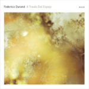
#1. Federico Durand – A Través Del Espejo
This delightful album was released on 12k early in the year, and I kept listening to it all year. (My wife liked it too, which is far from guaranteed with the more experimental fringes of my listening.) A childlike celebration of tiny, fragile sounds, and a reminder of what can be destroyed by noise and bombast, this album offers a series of delicate meditations on the vulnerable beauty of sound. Durand’s Jardín de invierno (on Spekk) deserves honorable mention in the same vein, but it was this earlier release that captivated my ears the most this year.

#2. Nicolas Jaar – Sirens
The haunting first track displays magnificently Jaar’s precise mastery of his palette of sounds. The album continues with a compelling sideways take on a variety of song forms, with the thematic focus on a culture of political violence providing a dark textual undercurrent. A remarkable piece of work, whether one focuses on the catchy songs, on the textual warnings, or on the meticulously shaped sonic shifts.
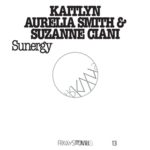
#3. Kaitlyn Aurelia Smith & Suzanne Ciani – Sunergy
An inspired set of Buchla synthesizer improvisations from a senior master of the art and a new rising star (Smith’s solo album Ears this year was also excellent). Sequences burble and sparkle over shifting hums and currents, providing a compelling update to the long-form analog synthesizer genre.
#4. Psychic Temple – Plays Music for Airports
What if Brian Eno’s classic ambient work, Music for Airports, were recorded as a jazz album? Chris Schlarb showed us this year that the results could be very enjoyable indeed. We also get a new, complementary piece, the “working man’s counterpart” to music for airports titled “Music for Bus Stops.” Both pieces charmed me.
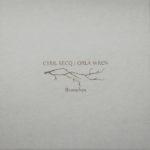#5. Cyril Secq and Orla Wren – Branches
An acoustic guitar meanders gently and peacefully as an unsettled bed of chirping, buzzing, warbling, squeaking electronics chatters tensely alongside, setting up a fascinating conversation that sometimes produces tension, sometimes converges.
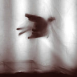#6. M. Ostermeier – Tiny Birds
Building on last year’s Still, M. Ostermeier returned with an aptly titled collection of short, plaintive piano pieces. Accompanied by background rustles and rattles, the tracks are sparse, stark, melancholy, almost hesitant in their deliberation. The sound is intimate, inviting us to slow down and attend rather than carrying us along.
 #7. Autistici and Justin Varis – Nine
#7. Autistici and Justin Varis – Nine
David Newman’s recent releases have struck an absorbing balance between experimental exploration of the properties of sound and a melodic presence, and this collaboration with Justin Varis continues in the same rich vein. Remixes by various luminaries of the genre add a further dimension to this charming collection of off-kilter pieces.
 #8. Sarathy Korwar – Day to Day
#8. Sarathy Korwar – Day to Day
Korwar takes field recordings of folk music from Indian villages and marries them with jazz and electronics so skilfully that it is hard to see the joins. Raw recordings of chant and percussion from India provide the substrate that morphs into engaging jazz sequences that extend the sources without leaving them behind. A striking, unusual release.
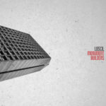#9. Loscil – Monument Builders
Loscil continues to find new angles on his distinctive sound, and his latest contains some of his most aggressive rhythms to date. It also serves up a fresh helping of his signature hypnotically shimmering pulses. I have never met a Loscil album I didn’t like, and this latest release more than kept the streak going.
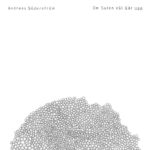#10. Andreas Söderström – Om Solen Väl Går Upp
Resonant guitar notes follow one another at a gentle, leisurely pace. An ethereal atmosphere builds amid their resonance. Chiming rhythms eventually arrive, but only accentuate the calm. The album drifts by lazily, a slow caress.
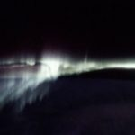#11. Thomas Köner – Tiento de la Luz
An evocative follow-up to Tiento de las Nieves, Tiento de la Luz offers a glacially paced interaction of piano, viola da gamba, and electronics. As usual with Köner, deep frequencies and extended textures play an important role, with the decay of each note held before us for contemplation. Mesmerizing listening.

#12. Gareth Davis – Filament
A rich, undulating, 35-minute drone, embedded in field recordings of the ocean, gains texture from the use of bass and contrabass clarinet along with electronics. Deep rumbles and whale-song-like squeaks ebb, and flow, and sway to deeply atmospheric effect.
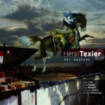
#13 Henri Texier – Sky Dancers
The Native American sonic references may be a little hokey here and there, but the more I listened to this release from French jazz bass veteran Henri Texier the more the tunes sank their hooks into me. The live reprise released later in the year, Dakota Mab, is worth a listen too.

#14 Porya Hatami and Arovane – Kaziwa
Piano again, now heard through a rich haze of sonic manipulation, tinkling amid a crackle and rush of air, emerging from a busy hum, chiming like bells, meandering sadly, punctuating an ominous buzz. Porya Hatami and Uwe Zahn keep shifting the sonic palette a little, crowding the electronic atmosphere with portent as the piano soldiers bravely on.
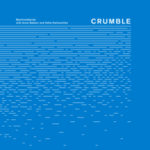
#15. Machinefabriek – Crumble
This is not background music. It seems at any given moment as if little is happening, yet the whole unfolds in a way that feels tautly dramatic, like a small movie made of slight violin scrapes, hisses, metallic reverberations, wordless vocalizations, the sounds of something important happening, just over the horizon and almost out of earshot.
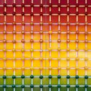#16. Nonkeen – The Gamble
Nils Frahm got together with some childhood friends to revisit and remix some tapes they had made decades ago. The result is a collection of atmospheric lo-fi instrumentals that somehow manage to sound reminiscent of Frahm’s solo work while being little like his previous material in form.
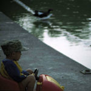#17. Darren McClure – On the Edge of Now
McClure trades more in precise measures of sound than in tunes. Each track on this immersive, painstakingly crafted album invites the listener to meditate on a specific quality of carefully constructed sound, ranging from the nature-tinged water-and-hum of the opening track to almost-not-there gossamer drones and unexpected pulses.
 #18. Koen Holtkamp – Voice Model
#18. Koen Holtkamp – Voice Model
There are stretches in which this album sounds like a gaggle of synthesizers improvising by themselves, without human intervention. Bright, chiming sounds ripple and cascade merrily. Stick around, though, and the two long pieces begin to develop and morph, building into rich swathes of sound.
#19. Paul Jebanasam – Continuum
Drone and noise, crackle and hum, chaotic dissolution of sound and a massive sense of grandeur – these are the basic building blocks of Continuum. Jebanasam sets out to capture “the spectrum of life, power and energy present in the universe” and emerges with a dramatic set of drone compositions.
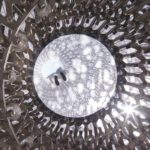#20. Be – One
The practically ungooglable title gave me some trouble tracking down this unusual release. It began from recordings of the sounds of bees in their hives and built instrumental compositions around the bee drones and buzzes. The music is pastoral, and the interweaving of natural and instrumental sounds is quite sensitively done.
Honorable mentions:
On a different day, these might have made the list:
Alexander Hawkins and Evan Parker – Leaps in Leicester; F.S.Blumm & Nils Frahm – Tag Eins, Tag Zwei; George Coleman – A Master Speaks; Ian William Craig – Centres; Kaitlyn Aurelia Smith – Ears; Marconi Union – Ghost Stations; Peter Bernstein – Let Loose; Solo Andata – In the Lens; Wil Bolton – February Dawn; Zahn | Hatami | McClure – Veerian.

David Smith
David Smith currently lives in the Midwestern United States, where he teaches, writes, and enjoys a very wide range of music, with regard to which he claims no expertise whatsoever beyond that of a dedicated and appreciative listener.